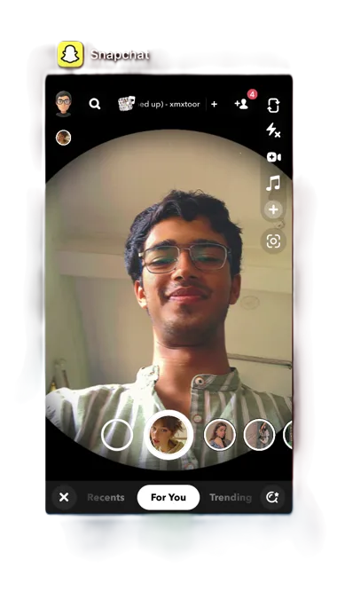

Hi, I'm Tanmay Somani
Data Scientist. AI / ML Engineer. Problem Solver. Open-Source Contributor.

About Me
I build applied ML systems end to end: XGBoost baselines validated with time-series cross-validation before any deep model gets a look in, LSTM forecasts for Delhi's hourly air quality, Zhang et al.'s ECCV'16 colorization network running on CUDA, and a Double DQN agent trained on hand-engineered danger-state features. On the LLM side I've shipped local-first RAG pipelines — ChromaDB memory, Ollama inference, BERTopic + HDBSCAN for theme discovery.
Most of the time goes to the unglamorous parts that make models trustworthy: leakage-proof splits, error analysis before architecture tuning, property-based tests on financial math (pytest + Hypothesis), and wrapping the result behind FastAPI services people actually use.
>>> now: comparing seq2seq LSTM vs. lagged-gradient-boosting heads for multi-step AQI forecasting
How I work
Every new dataset gets the same treatment: profile it and plot the ugly parts first; score a dumb baseline under a validation scheme that mirrors deployment (time-aware for anything temporal); then earn complexity incrementally — error analysis decides where the next hour goes, not model fashion. Anything worth keeping ships behind an API, with tests on the math and eyes on the residuals.
from bertopic import BERTopic
from hdbscan import HDBSCAN
docs = day_log("2026-08-21") # window titles + OCR
tm = BERTopic(hdbscan_model=HDBSCAN(min_cluster_size=5))
topics, _ = tm.fit_transform(docs)
print(tm.get_topic_info()[["Count", "Name"]].head())18 topics · 11% noise
silhouette 0.41 · min_cluster=5 · all on-device
Portfolio
Flip through my projects — scroll, drag, or use the arrows to turn pages.
Scroll, drag, or use the arrows — turning the page is the scrollbar.
Tech Stack
Grouped the way work actually flows — data in, model out, decisions visible.
Notes & Experiments
ML write-ups and engineering notes from my Medium blog — experiments surface first.
Fetching latest posts…
Contact Me
Have a project idea or want to collaborate?
Ways to reach me
Whether you have a project idea, a question, or just want to say hello — drop me a message and I'll get back to you within 24 hours.